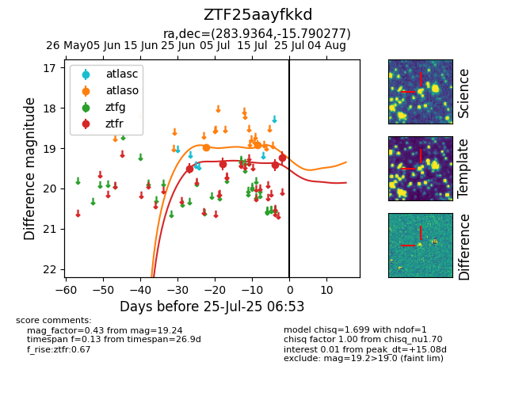

Target ZTF25aayfkkd at 2025-07-25 06:53, see:
FINK: fink-portal.org/ZTF25aayfkkd
Lasair: lasair-ztf.lsst.ac.uk/objects/ZTF25aayfkkd
ALeRCE: alerce.online/object/ZTF25aayfkkd
alt names
ZTF25aayfkkd (ztf,fink)
coordinates:
equatorial (ra, dec) = (283.9364,-15.79028)
galactic (l, b) = (19.2656,-8.05811)
photometry
last atlaso=18.91, ztfr=19.24
2 atlaso, 4 ztfr detections
